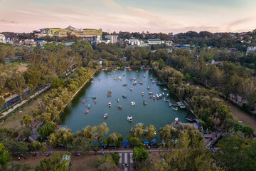

Welcome
Welcome to my travel page! This simple website highlights one of my favorite destinations in the Philippines. Explore its tourist attractions, food, and how to reach the city.
Top Attractions
- Burnham Park 
- Mines View Park
- Camp John Hay
- Botanical Garden
Burnham Park is a famous landmark in Baguio City known for its relaxing atmosphere and scenic views. It features a man-made lake where visitors can enjoy boating, biking, and picnicking, surrounded by gardens and pine trees. It’s a perfect spot to unwind and experience the city’s cool mountain air.
Mines View Park is one of Baguio’s most popular tourist spots, offering a stunning panoramic view of the old mining town of Itogon and the surrounding mountains. Visitors can enjoy the cool breeze, take photos, and shop for souvenirs, native crafts, and local delicacies.

Camp John Hay is a historic and scenic attraction in Baguio City known for its pine-covered landscapes, peaceful ambiance, and colonial charm. Once a U.S. military rest area, it now offers hotels, restaurants, golf courses, and nature trails perfect for relaxation and leisure.

The Baguio Botanical Garden is a lush green space filled with colorful flowers, towering pine trees, and native huts. It showcases the city’s rich culture and love for nature, offering visitors a peaceful place to stroll, take photos, and enjoy the cool mountain air.
Famous Local Food
Baguio is famous for its strawberries, ube jam, and fresh vegetables grown in its cool mountain climate. Visitors can enjoy these local treats at the Baguio Public Market or buy popular pasalubong like Good Shepherd’s ube jam. At night, the city’s markets come alive with street food, souvenirs, and a lively atmosphere that highlights Baguio’s rich food culture.
Contact Information
For more information, visit: Baguio City Official Website
Email: info@baguio-tourism.ph